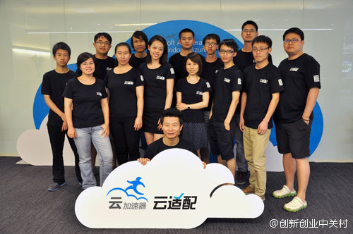

#经典言论# 这么多年以来，我做企业的最大感受：你把一件事做到行业的平均水平很容易，但是如果想把一件事做得比别人更好，可能你花出10倍的努力，结果可能只比别人好10%，所以如果你想要把事情做到完美极致，为此可能要付出10倍的代价，你要有这种思想准备才行。- 刘强东
可以买iPad版程序员杂志。网页链接 60元 = 1年程序员杂志 + 1年CSDN VIP免积分下载通道 //@平凡的香草: ，没买是遗憾啊@jackyrong:本 期的《程序员》一月份的淘宝阿里系的“双11”专题的确干货十足呀，从中间件，数据库，运维等各方面集中讲解13年双11的幕后，为近几年《程序员》杂志专题中的佳品呀 @蒋涛CSDN @Ada李力 @平凡的香草 @jacky_1019
听飞鱼秀，小飞说他大学时有次感冒，同宿舍包括外宿舍的人，纷纷来给他拔罐，背上布满了印记。他下午就觉得好多了。说：”虽然我平时嘴损了些吧，但心肠还是不错的，怎么能这样借机报复呢？ - 我当时在车里听着就笑坏了。今天有人说我说话意思道理都对，但让人听着总不那么舒服。这也是嘴损的表现。
CSDN网站也在用//@陈本峰: 这个奖既是动力也是压力，@云适配 接下来一定要更加努力，帮助中国数百万个企业以最快的速度、最简便的方式进入移动互联网，使广大中小企业能够感受云计算技术带来的生产力飞跃。 @微软创投加速器 @微软研发@创新创业中关村:【云适配陈本峰入选“2013中关村十大海归新星”】#人才高地#云适配是一种基于云计算和html5的网页跨屏适配解决方案，用一行代码将PC网站移动化，实现网址不变，内容实时同步。原微软出身的@云适配 CEO@陈本峰 凭借着已经获得国际专利的云适配，评选为“2013中关村十大海归新星”。网页链接 
 满足需求与赚钱的因果
满足需求与赚钱的因果